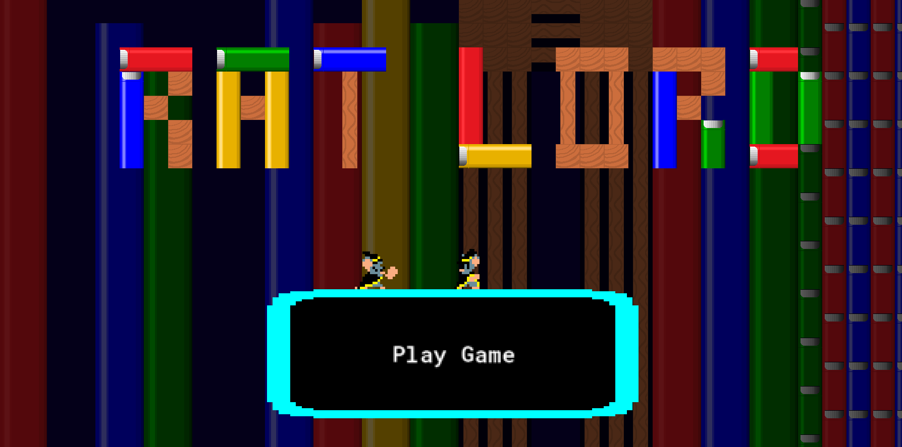
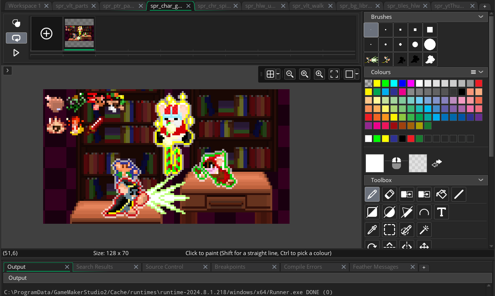
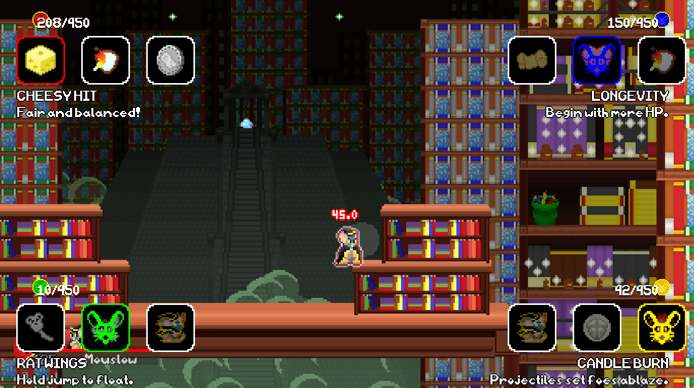
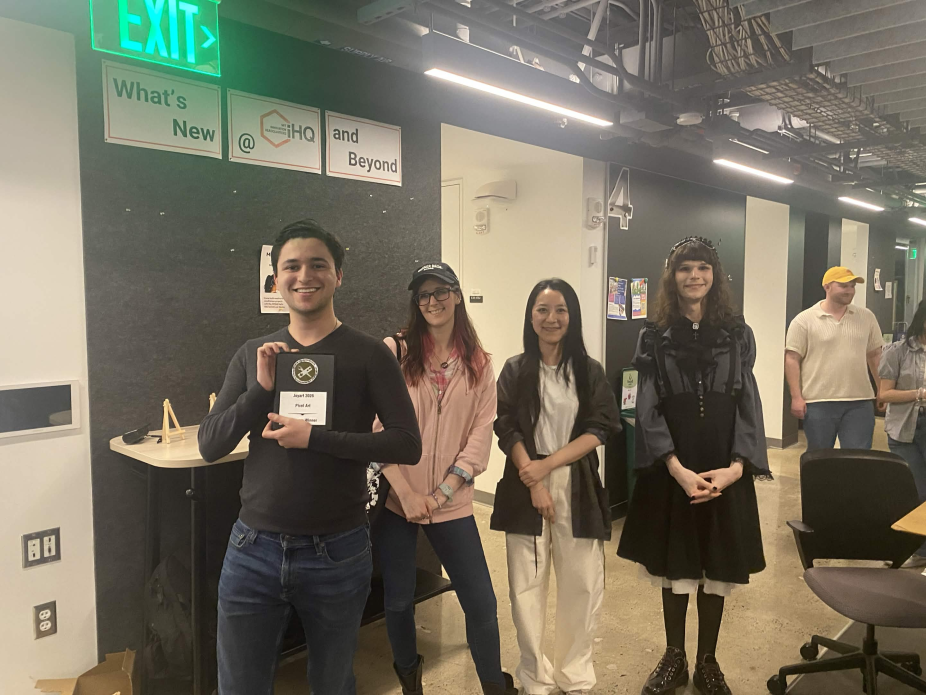

Download Here!
Skills Used
GameMaker
Software Engineering
Game Design
UI Design
Animation
Pixel Art
Sound Design
Game Engine
GameMaker
Development Period
October 2024 (Game Jam)
January 2025 - Present (Project)
Role
Programmer
Artist
Gameplay Designer
Sound Designer
UI Engineer
Teammates
None this time -- just me!
Controls (Keyboard)
| Player 1 | |
|---|---|
| WASD | Move |
| G | Attack |
| H | Special |
| V | Jump |
| B | Block |
| C | Taunt |
| Player 2 | |
|---|---|
| Arrows | Move |
| Num1 | Attack |
| Num2 | Special |
| Num0 | Jump |
| Num3 | Block |
| Num4 | Taunt |
RAT LORD
Rat Lord is a platform fighter with a roguelike twist. With every passing round, players choose upgrades to boost the power of their rats. Give your attacks a fiery edge, summon projectiles, heal by crouching in place, create whole new moves -- anything is possible with the possible combinations of perks you can collect!
Development

Rat Lord began life as a game jam in October 2024. The theme was "creepy-crawlies", and my love of platform fighters led me to making a game of said genre. I also had been playing roguelikes during that time, so I decided to implement randomly-allocated perks. It seemed to be highly popular, with some people even privately hosting tournaments!
Eventually, the game rapidly outgrew its game jam origins, and I sought to make a more complete version of the game. Under my LLC Gold Cosmos Games, I have been passionately working to make this a fighting game reality. It has currently been under development for a 18 months, with its progress well on its way!
Footage of the game can be seen on the Gold Cosmos Games YouTube channel.
Systems
The key gameplay system in Rat Lord is the perks. After each round, players are given three perks to pick up. They affect all manners of gameplay, including:- Movement (extra jumps, increased speed)
- Attacks (chargeable bursts, projectile summons)
- Status Effects (resistance to poison, causing burn effects, freezing foes)
- Items (raining food, fireball launching)
- Defense (reflecting parries, burst escape options)
Art

I created all of the art assets in GameMaker studio's sprite editor. This includes characters, stages, perks, items, and menu designs. I'm especially proud of the character art, which currently consists of two full sets of 22 animations for attacks, movement, and character expression.In addition, I decided that for improved visual clarity, characters would have color-coded outlines.
I also worked with shaders to make palette swaps for characters and impact frames when characters get KO'ed.
User Interface

User Interface (UI) is one of the most important things in a fast-paced game like Rat Lord. Players need to know what's going on quickly, so I put together a few details in the HUD to maximise legibility.
Every element is designed to give the players essential information.
For one, players are color-coded and have portraits so that they can tell who they are. The portraits also change their expression when they get hit! Health is displayed in two forms: as numbers for specific detail and a color-thematic cheese wheel for rough estimates at a glance. The shape behind the character's portrait, in addition to being a nice frame, also doubles as a meter for the game's Burst meter to let players know they can escape a combo. Points are displayed to the right, with the number becoming yellow if the player is close to victory. Lastly, the perks for the game are displayed as microscopic icons below the HUD.

When a round ends, everyone needs to pick up a perk from their corner of the screen. The current one you're hovering over has its edge colored the player color, and a rat icon stamps it when you make your decision.
Sound Design
I collected sounds from freesound.net as samples, then I edited them with Audacity to make the sounds you hear in game.I have yet to include music, but I intend to begin soon using FL Studio.
Awards and Achievements

In its brief development life, Rat Lord has quickly amassed a few achievements of note.
At JoyArt, an intercollegiate game art event, Mouslow's animations were a nominee for 2025's Best Pixel Art category. Nicolai's full sprite animation sheet won Best Pixel Art the next year.
Additionally, Rat Lord has had the honor to be presented at WPI's booth at PAX East in 2025 and 2026! There, it was presented for the world to see as one of the premier games to come out of the university's IMGD student body.